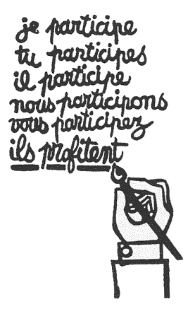
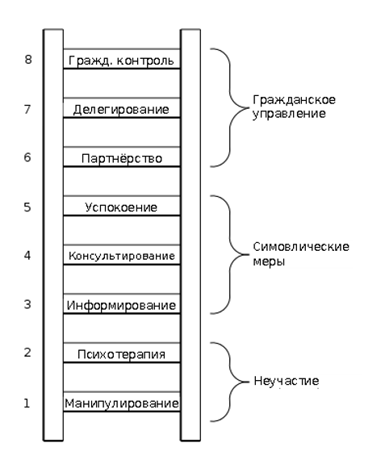

Проблема низкого уровня участия
В данном разделе обсуждается проблема низкого уровня участия общественности в принятии решений. Раздел может быть полезен любым заинтересованным сторонам в лесной сертификации, которые хотят расширить участие общественности в лесном менеджменте, сделать процесс лесной сертификации более открытым и получить преимущества от сотрудничества в долгосрочной перспективе.
Представители FSC и сертифицирующих компаний (NEPCon) отмечают, что несмотря на то, что Беларусь является одним из лидеров по FSC-сертификации в мире по доле сертифицированных лесов, жители страны не используют свои возможности участия в полной мере. Особенностью и проблемой при проведении лесной сертификации в Республике Беларусь является немногочисленность и пассивность заинтересованных сторон. Сертификация дает много возможностей для охраны природы и продвижения интересов местных сообществ, но лишь немногие организации пока вовлечены в эту деятельность. В целом экологическая общественность недостаточно хорошо понимает значимость этого инструмента и тех возможностей, которые дает сертификация. Уровень участия местных жителей также низкий. Одной из причин этого является недостаточная информированность общественности, но также влияют и другие факторы: арендные отношения в лесном хозяйстве и продажа леса на корнюКак лесная сертификация может защитить наши леса. https://bahna.land/ru/lesa/kak-lesnaya-sertifikatsiya-mozhet-zashchitit-nashi-lesa.
Между тем низкий уровень участия общественности в принятии решений наблюдается не только в сфере лесного менеджмента и не только в нашей стране. Эта проблема была проанализирована и описана более 40 лет назад исследовательницей Шерри Арнштейн, которая в своей статье «Лестница гражданского участия» представила в виде продуктивной метафоры восемь возможных стратегий привлечения гражданского общества к вопросам планирования и управленияArnstein, Sherry R. A Ladder of Citizen Participation, JAIP, Vol. 35, N 4, July 1969, pp. 216-224 (Арнштейн Ш. Лестница гражданского участия. Журнал Американского института градостроителей, том 35, № 4, июль 1969, с. 216-224). Режим доступа: https://lithgow-schmidt.dk/sherry-arnstein/ru/ladder-of-citizen-participation_ru.html. С тех пор статья переиздавалась более 80 раз и была переведена на несколько языков.
Согласно Арнштейн, существует серьезная разница между пустым ритуалом формального участия и обладанием реальной возможностью повлиять на исход процесса. Арштейн приводит в качестве иллюстрации этой идеи плакат французских студентов во время протестов в 1968 году (см. рис. 32). Основное сообщение этого плаката заключается в том, что участие может быть бессмысленным и обескураживающим процессом для тех, кто не имеет реальной власти. Оно дает возможность властьимущим утверждать, что учтены пожелания всех сторон, но извлекать выгоду позволяет лишь немногим. Неверие в возможности реально повлиять на процессы управления являются основными причинами пассивности населения. Это необходимо учитывать любым организациям и группам заинтересованных сторон, стремящимся инициировать или расширить процесс участия и вовлечь общественность в принятие решений.
Плакат парижских студентов, май 1968 г. Надпись: «Я принимаю участие, ты принимаешь участие, он принимает участие, мы принимаем участие, вы принимаете участие... они извлекают выгоду»
Лестница участия, Шерри Р. Арштейн
Самые нижние ступеньки лестницы — это (1) манипулирование и (2) психотерапия. Эти две ступеньки описывают уровни «неучастия», которые были придуманы для подмены подлинного участия. Их подлинная цель — не дать людям возможность участия в планировании или осуществлении программ, а предоставить властьимущим возможность «учить» и «лечить» участников. Третья и четвертая ступеньки — это уже уровни «символических мер», которые позволяют неимущим слушать и иметь право выразить свое мнение. Назовем их (3) информирование и (4) консультирование. Когда властьимущие предоставляют их на уровне общего участия, граждане действительно могут слушать и быть услышанными. Но в этих условиях им недостает полномочий, гарантирующих, что их мнение будет услышано властителями. Когда участие сводится к этим уровням, нет возможности проверить, как выполняются обещания, нет «мускульной силы», а значит, и нет уверенности, что существующее положение вещей изменится. Пятая ступенька — (5) умиротворение — это просто более высокий уровень символических мер, поскольку здесь правила игры предусматривают для неимущих право совещательного голоса, но при этом сохраняют за властьимущими все то же право принимать решения.
Выше на лестнице располагаются уровни гражданского управления со все увеличивающейся привилегией принятия решений. Граждане могут вступать в отношения (6) партнерства, что позволяет им вести переговоры и находить компромиссы с традиционными носителями власти. На самых верхних ступеньках — (7) делегирование полномочий и (8) гражданский контроль — неимущие граждане получают большинство в принятии коллективных решений или всю полноту управленческой власти.
Естественно, лестница из восьми ступеней — это упрощение. Однако она помогает проиллюстрировать мысль, которую многие авторы упустили из виду, — что участие граждан имеет свои существенные градации. Знание этих градаций позволяет без помощи метафор понять все более резкие требования участия со стороны неимущих, а также всю гамму путаных пояснений властьимущихArnstein, Sherry R. A Ladder of Citizen Participation, JAIP, Vol. 35, N 4, July 1969, pp. 216-224 (Арнштейн Ш. Лестница гражданского участия. Журнал Американского института градостроителей, том 35, № 4, июль 1969, с. 216-224)..
Что необходимо для полноценного и успешного участия общественности? Успешное участие общественности требует включения широкого спектра общественных ценностей в обсуждение и процесс принятия решений. Этот процесс также будет доступен для всех общественных интересов. Процессы участия должны учитывать не только широту в достижении максимального широкого (количественно) представительства затрагиваемых заинтересованных сторон и сообществ, но также и глубину (качество) участия с точки зрения уровня обмена информацией и способности влиять на решение. Предоставление возможностей для влияния на принятие решений создает разницу между консультациями и более активным сотрудничеством (см. рис. 34 — Лестница участия).
Участие общественности — это не одностороннее информирование и не однократное мероприятие. Это процесс, который носит цикличный и повторяющийся характер. Должны быть предоставлены возможности для откровенного и открытого обсуждения; достижение консенсуса не всегда является определяющим критерием успеха, но прослеживаемое влияние на решения имеет важное значение.
Практика участия общественности в Беларуси пока развита недостаточно. Большинство государственных служащих (включая управляющих лесным хозяйством) не получают достаточную подготовку и обучение для того, чтобы обеспечить качественный процесс участия общественности. В данной ситуации возрастает роль общественных организаций, которые могут как стать инициаторами процесса участия общественности, так и обеспечить информирование и обучение всех заинтересованных сторон.
Для этого необходимо понимать и учитывать стереотипы и опасения как государственных служащих (носителей обязательств), так и общественности (носителей прав).
Ниже представлен перечень основных стереотипов, вопросов и проблем менеджеров лесного хозяйства, которые мешают развитию полноценного и полноправного диалога в процессах участия общественности:
- Если бы общественность понимала, что мы пытаемся сделать, они бы поддерживали нас.
- Я обученный профессионал; я знаю лучше.
- У нас был день открытых дверей/общественное собрание, и никто не пришел.
- Люди, которые появляются на встречах, не представляют широкую публику.
- Это всегда одни и те же заинтересованные стороны; одна и та же песня.
- Эти люди просто используют нас как платформу для трибуны по своим вопросам, в конечном итоге перекрикивая всех остальных.
- Городские люди управляют повесткой дня; но они не понимают проблемы лесного хозяйства и сельские ценности.
- Кто вообще является широкой общественностью?
- Сколько участия общественности будет достаточно?
- С чего начать? Какие методы лучше для нас?
- Участие общественности требует больших усилий; мы не можем позволить себе, у нас нет времени и денег.Beckley, T., Parkins, J., and Sheppard, S. 2005. Public Participation in Sustainable Forest Management: A Reference Guide. Sustainable Forest Management Network, Edmonton, Alberta. 55 p.
Низкий уровень вовлеченности представителей общественности часто обусловлен не только недостатком информации относительно сертификации FSC в целом и возможностям, которые она предоставляет для участия и влияния, но также и низким уровнем доверия к государственным органам («от нас ничего не зависит»), а также недостатком успешных примеров участия общественности в принятии экологически значимых решений. Это приводит к чувству непричастности и апатии. Многие заинтересованные группы и лица испытывают также недостаток потенциала (информации, знаний, времени). Процесс полноценного участия требует значительных усилий. Существует риск выгорания общественных наблюдателей, так как по большей части это волонтерская работа.
Таким образом, планируя участие общественности, нужно учитывать все эти факторы и обеспечивать должное информирование, обучение, консультационную и другие виды поддержки всем участникам процесса. Инициатором расширения процесса участия в лесной сертификации может стать любая из заинтересованных сторон — лесное хозяйство, общественная организация или местные органы власти. Важно понимать, что развитие диалога заинтересованных сторон и участие общественности несет выгоды всем участникам процесса и ведет к наилучшему результату.
Чтобы сделать процесс участия общественности более эффективным, необходимо организовывать его на систематичной основе, сделав работу с общественностью проактивной. Систематическая работа включает в себя стадии, типичные для любого проектного цикла: анализ заинтересованных сторон и планирование целей участия, определение ожидаемых результатов, потребностей и бюджета. Откройте тему вовлечения общественности для всех заинтересованных сторон. Разработайте план вовлечения, правила и ответственность, процедуры внешней и внутренней коммуникации, мониторинга и оценки. Реализуйте план вовлечения общественности и оцените результаты.
Предоставление обратной связи и распространение информации о результатах деятельности по вовлечению общественности (как достижений, так и выученных уроков) является важным шагом для увеличения мотивации и доверия всех участников процесса.
Организация процесса участия общественности, скорее всего, потребует обучения как для государственных служащих, так и для представителей общественности. Необходимо будет также улучшение коммуникации между иерархическими уровнями лесного хозяйства.
Важно определять и обсуждать существующие или потенциальные конфликты в открытой и честной манере. Использование техник медиации и услуг внешнего медиатора может быть полезным для решения конфликтных вопросов.
Открытость и транспарентность являются ключевым фактором успеха процесса участия общественности. Процесс участия должен определять не только цели, но и показатели успеха.
Основные показатели успешного общественного участияBeckley, T., Parkins, J., and Sheppard, S. 2005. Public Participation in Sustainable Forest Management: A Reference Guide. Sustainable Forest Management Network, Edmonton, Alberta. 55 p.:
- Широкое представление — включение широкого спектра общедоступных ценностей.
- Доступность — доступность для всех общественных интересов.
- Обновление — предоставление возможностей новым участникам.
- Анонимность — защита личности участников при необходимости.
- Умение слышать и диалог — обеспечение двустороннего потока информации.
- Гибкость — обеспечение гибкости по охвату деятельности.
- Обсуждение — предоставление возможности для откровенной и открытой дискуссии.
- Прозрачность и достоверность — предоставление и продвижение в понятной форме независимого вклада из научных и других ценных источников.
- Построение отношений — способствовать развитию позитивных личных и институциональных отношений.
- Релевантность — влияние на принятие решений.
- Эффективность — повышение качества принимаемых решений.
- Взаимное обучение — вклад в повышение знаний всех участников.
- Взаимовыгодность — вознаграждение или обеспечение стимулов.
- Экономическая эффективность — адекватное соотношение результата и затрат на процесс участия.
Деятельность по участию общественности может способствовать восстановлению доверия между правительственными и неправительственными организациями, учреждениями и специалистами. Но даже при низком уровне доверия между людьми остается возможным развивать функциональные отношения, обеспечивая справедливость и эффективность общественных процессов. Кроме того, процессы участия общественности предоставляют важные возможности для выявления конкретных проблем или проблем, которые в противном случае могли бы остаться незамеченными. Если эти проблемы могут быть выявлены на ранних этапах планирования, становится возможным подготовить более всеобъемлющее и подходящее решение.